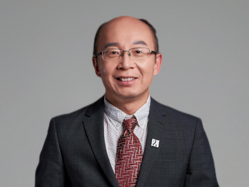

Professor 教授介绍

Professor Xiaowei Sun
孙小卫教授
孙小卫教授现为南方科技大学讲席教授、白俄罗斯国立信息与无线电大学荣誉博士，国家特聘专家，俄罗斯科学院外籍院士，亚太材料科学院院士。担任南方科技大学纳米科学与应用研究院执行院长、电子与电气工程系创系主任，能量转换与存储技术教育部重点实验室主任，广东省普通高校量子点先进显示与照明重点实验室主任。
Professor Sun Xiaowei has successively served as a professor of Nanyang Technological University in Singapore and director of the Microelectronics Center. He is a Distinguished Lecturer of the American Society of Electrical and Electronic Engineers (IEEE), the American Optical Society (OSA), the International Society of Optical Engineers (SPIE), the International Society for Information Display (SID), the British Physical Society (loP) Fellow, the CORE Academy, the American Society of Electrical and Electronic Engineers (IEEE), and the first SID Fellow of scholars in the Chinese Mainland. Professor Sun Xiaowei founded the Society for Energy Photonics and served as its chairman, and co founded the Singapore China Association for the Promotion of Science and Technology and served as its vice chairman.
孙小卫教授历任新加坡南洋理工大学正教授、微电子中心主任，是美国电机及电子工程师学会 (IEEE) 、美国光学学会 (OSA)、国际光学工程师学会 (SPIE)、国际信息显示学会 (SID)、英国物理学会 (loP) 会士 (Fellow)、国际核心人文与科学院(CORE Academy)会士 (Fellow)，美国电机及电子工程师学会 (IEEE) 杰出演讲人(Distinguished Lecturer)，是中国大陆学者第一个国际信息显示学会会士(SID Fellow)。孙小卫教授创立了国际能源光子学学会 (Society for Energy Photonics) 并担任主席，共同创立了新加坡–中国科学技术促进协会并任职副主席。
Professor Sun Xiaowei has won honors such as the SPIE DCS 2024 Fumio Okano Best 3D Paper Prize, the 2023 SID Slottow Owaki Award, the National Invention and Entrepreneurship Award Innovation Award First Prize, and the Guangdong Provincial Science and Technology Award Natural Science Second Prize. At present, the main research directions are wide bandgap semiconductor materials and devices, high-quality displays and lighting based on nanocrystals, extended reality and 3D displays, etc. More than 600 articles have been published in academic journals, with over 45000 citations and an H-index of 106 (Google Scholar). It has been selected as a highly cited scholar by Elsevier China for seven consecutive years and is one of the top 2% scientists in the world at Stanford.
孙小卫教授曾获SPIE DCS 2024年度The Fumio Okano Best 3D Paper Prize、2023 SID Slottow-Owaki奖、国家发明创业奖创新奖一等奖、广东省科学技术奖自然科学二等奖等荣誉奖项。目前主要研究方向为宽禁带半导体材料和器件、基于纳⽶晶的⾼品质显⽰和照明、扩展现实与3D显⽰等，在学术期刊共发表文章600多篇，论文引用超45000次，H-指数为106 (Google Scholar)，连续7年入选Elsevier中国高被引学者，是Stanford全球Top 2% 科学家。